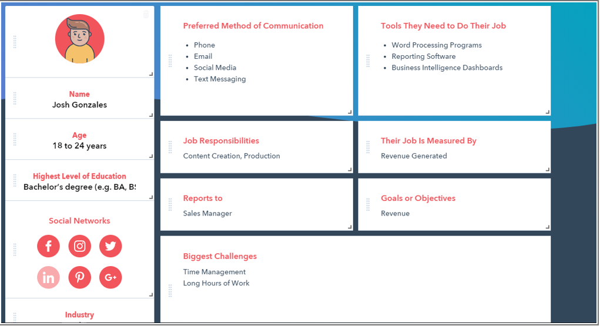

Ray Alexander Malvin Genete

This is an Activity page of Ray Alexander Malvin Genete
What is a Persona? According to the Interaction Design Foundation, personas are fictional characters that you create based on your research in order to represent the different user types that may potentially use your service, product, site, or brand. These fictional characters will help us in designing our project. We can use them to analyze the needs, experiences, goals and behaviors of our target users.
Here are the following Personas that we created using Hubspot:
1. Cindy N. Otime
Cindy N. Otime is a Senior Finance Associate in a big company that has 51-200 employees. Cindy is just like every other busy working individual. She reports to the CEO of the company. Her time is allotted to all work-related activities and doesn`t have time to do other things like cleaning. Her preferred methods of communication are through email, phone, and text messaging.

2. Boogie Wonderland
Boogie is a young man who is just starting to live with himself. He is starting to become an independent young man. He also works in a very big company that has 201-500 employees. Being a young man, most of his free time is spent on activities that he couldn`t do before, because now that he`s independent, he can do whatever he wants. Boogie is active on social media because he posts just about everything that goes on in his life.
3. Roy
Roy is a typical working guy. He works in a small company that has around 1-10 employees. He is one of the greatest assets of the company that he is working for. Being one of the greatest assets of the company, Roy needs to stay at work in order to maintain his performance. Most of his time is spent on making profit for the company. He has a lot of preferred methods of communication because he is the one who is responsible for contacting the potential clients.
4. Josh
Josh just landed his first job after graduating and his Asian parents decided to buy him a condo as a grad gift. He works as a sales rep and is a very busy man. Ever since he was a child he had someone taking care of himself and everything that he needed. Because of his long hours at work and background, he neither has the time or knowledge to clean his condo unit.
